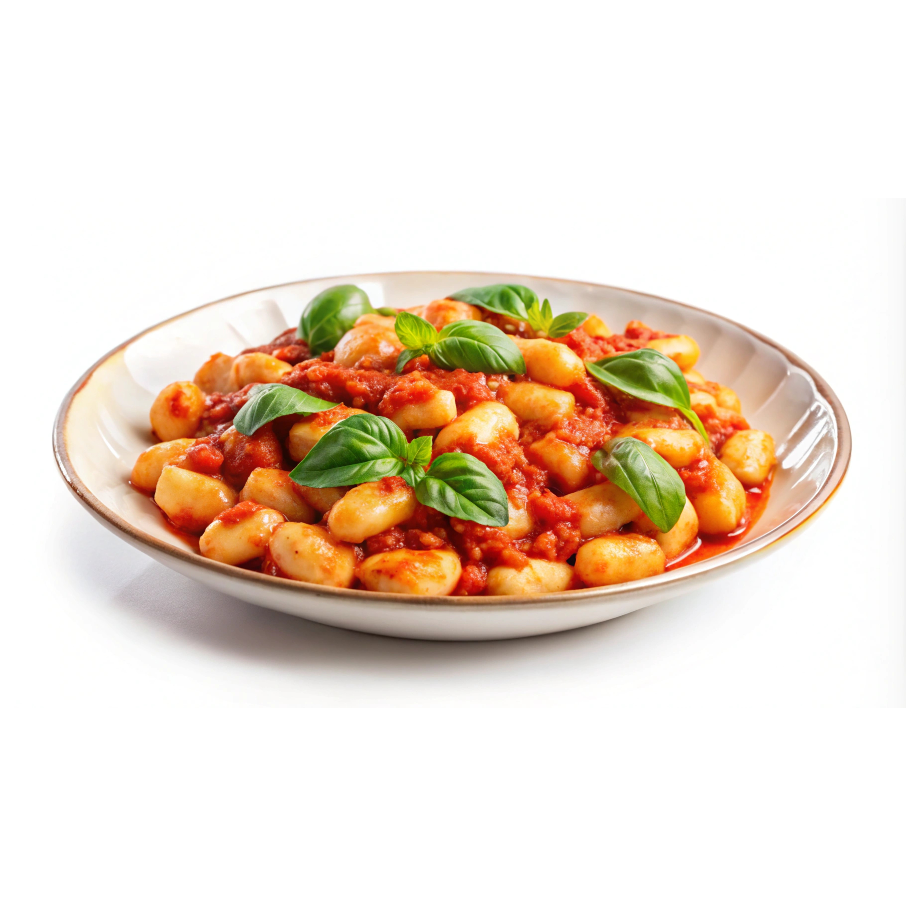

Gnocci in an easy one pan tomato sauce
This recipe is quick, easy and very hands off. Enjoy an easy creamy tomato cream sauce made from fresh cherry tomatoes.

1
This is an easy, delicious and filling meal made out of nothing but fresh cherry tomatoes, garlic, cream, seasonings and gnocci. I like to add some spinach to up the nutritional value of it, but it is plenty great by itself. It all comes together in one pan and is completely hands off, so this dish is perfect for a lazy day where you just want to throw some tomatoes in a pot and let them cook into mush. You do need two pans though, one to cook the gnocci, and one to make the sauce.
Ingredients:
- 500g dried or fresh gnocci
- 500g cherry tomatoes
- optional. Spinach, however much you like.
- 250ml cream
- 3 Garlic cloves, crushed
- Salt and black pepper
- 2 tbsp olive oil
- Paprika powder
- Italian herbs, I like thyme, oregano and basil
Instructions:
Note: I recommend first reading through the entire recipe before commencing cooking, knowing whats coming ahead helps you prepare everything and prevents being caught off guard and mistakes.
- First, fill a large pot with water and let it boil. Don't add salt yet, as water boils slower if it is salted. Resume with the recipe as normal, and once the water is boiling, add in a generous amount of salt and dump in your gnocci. Put a timer according to the package instructions, and drain the gnocci when it is finished. This recipe is so hands off that doing this wont really interrupt anything else important, as all you do is wait anyway.
- Wash all your cherry tomatoes and blot them off with a towel to avoid sputtering in the oil.
- Add your olive oil to a large, heavy bottom sauce pan. Once it is warm, dump in all your tomatoes as they are.
- While your tomatoes start cooking, work on your garlic. Cut off the root end and place a large knife ontop of the garlic clove. Then use the lower part of your palm close to your wrist and smash against the knife with some force, crushing the garlic. Be careful, however if your knife is large enough and youre using the bottom of your palm, nothing should go wrong. After this, the peel should easily just come off the garlic and you can toss it into the pan as is. Crushing the garlic allows it to release its aromas while not burning as quickly as something like minced or sliced garlic.
- Once all your garlic is added, let the tomatos cook until they become mushy and almost fall apart. Your goal is to be able to crush the tomatoes with your spoon without much resistance. If you need to apply force for them to crush, let them cook more. Repeat this until all tomatoes are crushed and released all their liquid into the pan.
Note: This is also a good time to do some cleanup while you wait for the tomatoes to cook down.
- Once your tomatoes are all fallen apart, add your seasonings. Again I suggest you do it by feeling, and taste as you go. Add all of your seasonings here. Be sure to only add a pinch of sugar. The sugar is not here to make it sweet, but the sweetness of the sugar cuts through the acidity of the tomato, making for a more balanced flavour palette, which is nessecary here especially as we do not have many flavours to work with.
- After you added your seasonings, add your cream and mix until it becomes all homoginized. Give it another taste and check for seasoning, adding more if needed.
- Add your spinach and let it cook until it wilted into the sauce, if youre using frozen spinach this could take a minute or two, however if you're using fresh spinach this should happen almost instantly.
- Finally, add your gnocci into the sauce and mix it all in.
- To serve, what I like to do is to use a deep plate and add a drizzle of olive oil ontop, aswell as some freshly cracked black pepper, however all of this is optional.
Home